驱动开发-基于GPIO的LED
前言
本次实验是基于正点原子开发板I.MX6ULL开发板来学习的
硬件原理分析
本次实验我们使用的是正点原子开发板上的led灯，我们查看开发板原理图可以看到led灯连接在GPIO_3引脚上的
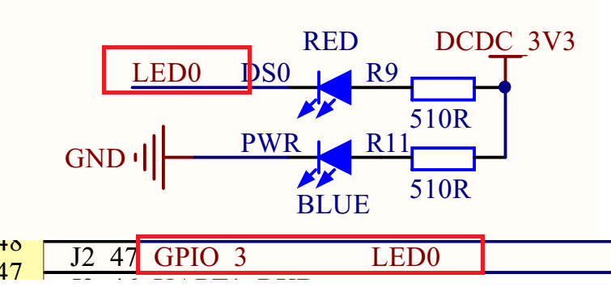
我们打开芯片核心原理图可以找到GPIO_3对应的是IMX6ULL芯片的GPIO1_IO03引脚
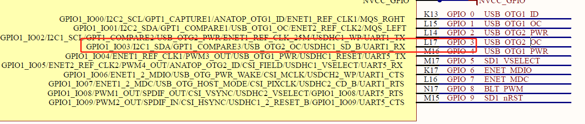
我们本次实验使用的就是I/O功能，因此我们打开arch/arm/boot/dts/imx6ul-pinfunc.h文件找到对应的宏MX6UL_PAD_GPIO1_IO03__GPIO1_IO03
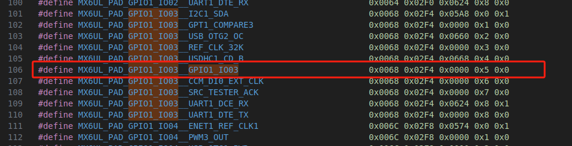
设备树编写
dtbs文件：
添加
pinctrl节点在
iomuxc节点的imx6ul-evk子节点下创建一个名为pinctrl_led的子节点,将GPIO1_IO03这个 PIN 复用为GPIO1_IO03，电气属性值为0X10B0。在
imx6ull-alientek-emmc.dts文件中找到&iomuxc节点，添加对应的电气属性格式：
1
2
3
4
5
6pinctrl_自定义名字: 自定义名字{
fsl,pins = <
引脚复用宏定义PAD（引脚）属性
引脚复用宏定义PAD（引脚）属性
>;
};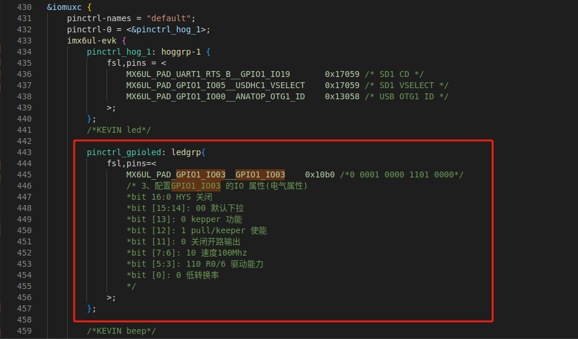
imx6ull-alientek-emmc.dts 1
2
3
4
5
6
7
8
9
10
11
12
13
14
15pinctrl_gpioled: ledgrp{
fsl,pins=<
MX6UL_PAD_GPIO1_IO03__GPIO1_IO03 0x10b0 /*0 0001 0000 1101 0000*/
/* 3、配置GPIO1_IO03 的IO 属性(电气属性)
*bit 16:0 HYS 关闭
*bit [15:14]: 00 默认下拉
*bit [13]: 0 kepper 功能
*bit [12]: 1 pull/keeper 使能
*bit [11]: 0 关闭开路输出
*bit [7:6]: 10 速度100Mhz
*bit [5:3]: 110 R0/6 驱动能力
*bit [0]: 0 低转换率
*/
>;
};电气属性
常用到的配置电气属性包括：压摆率，速度，驱动能力，开漏，上下拉等。
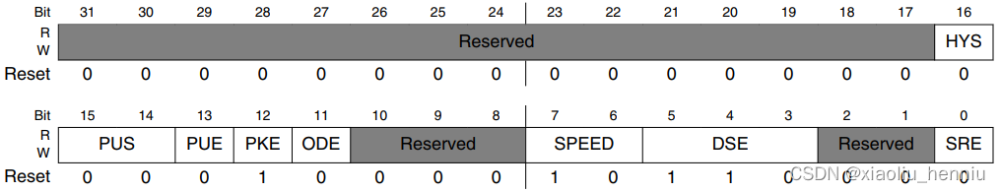
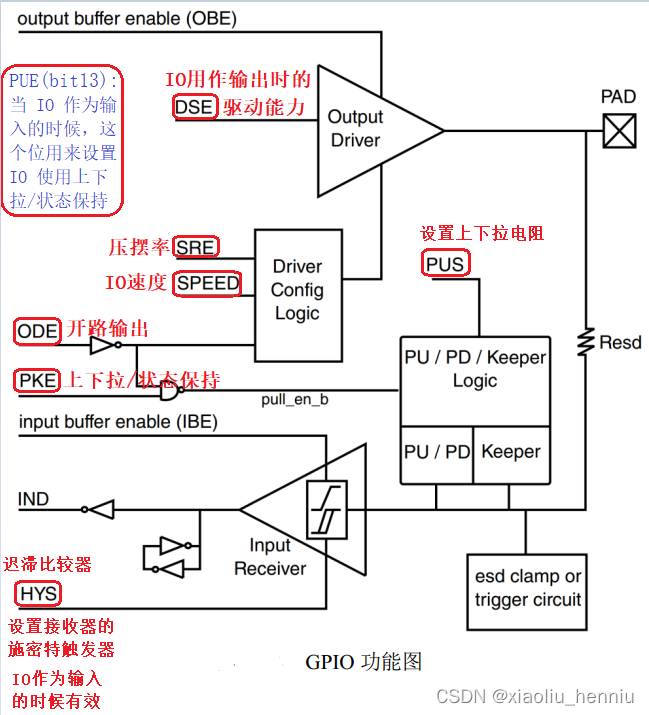
SRE(bit0)： 对应图中的 SRE，设置压摆率，当此位为 0 的时候是低压摆率，当为 1的时候是高压摆率。这里压摆率就是 IO 电平跳变所需要的时间，比如从 0 到 1 需要多少时间，时间越小波形就越陡，说明压摆率越高；时间越长波形就越缓，压摆率就越低。如果你的产品要过 EMC 的话那就可以使用小的压摆率，因为波形缓和，==如果使用 IO做高速通信的话就可以使用高压摆率==。（SPI通信）
**DSE(bit5:3)：**对应图中的 DSE，当 IO 用作输出的时候用来设置 IO 的驱动能力，总共有 8 个可选选项，如下表：
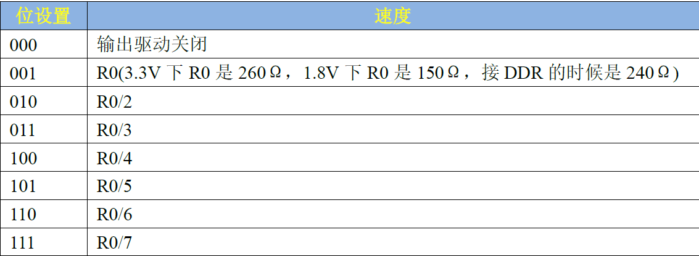驱动能力设置 SPEED(bit7:6)： 对应图中的 SPEED，当 IO 用作输出的时候，此位用来设置 IO 速度，设置如下表：
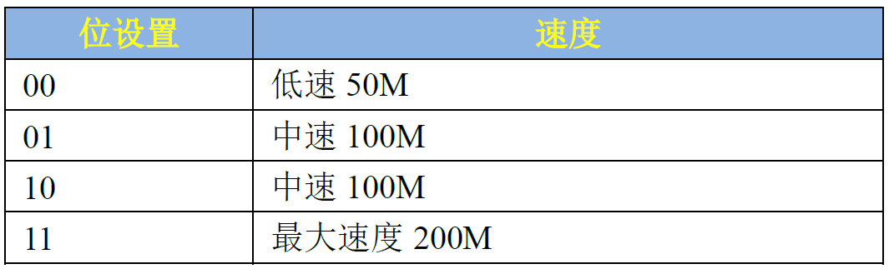速度设置 **ODE(bit11)：**对应图中的 ODE，当 IO 作为输出的时候，此位用来禁止或者使能开路输出，此位为 0 的时候禁止开路输出， 当此位为 1 的时候就使能开路输出功能。
PKE(bit12)： 对应图中的 PKE，此位用来使能或者禁止上下拉/状态保持器功能，为0 时禁止上下拉/状态保持器，为 1 时使能上下拉和状态保持器。
PUE(bit13)： 图中没有没有给出，当 IO 作为输入的时候，这个位用来设置 IO 使用上下拉还是状态保持器。当为 0 的时候使用状态保持器，当为 1 的时候使用上下拉。状态保持器在IO 作为输入的时候才有用，就是当外部电路断电以后此 IO 口可以保持住以前的状态。
PUS(bit15:14)： 对应图中的 PUS，用来设置上下拉电阻的，一共有四种选项可以选择，如下表：
上下拉设置 **HYS(bit16)：**对应图中 HYS，用来使能迟滞比较器，当 IO 作为输入功能的时候有效，用于设置输入接收器的施密特触发器是否使能。如果需要对输入波形进行整形的话可以使能此位。此位为 0 的时候禁止迟滞比较器，为 1 的时候使能迟滞比较器。
添加led设备节点
在根节点
/下创建LED灯节点，节点名为gpioled，节点内容如下：1
2
3
4
5
6
7
8
9
10
11
12
13
14
15
16
17
18
19
20
21
22
23
24
25
26
27/*gpio-led*/
gpio_leds {
// 指定子节点的地址用1个u32数字表示（常用于reg属性的地址部分）
// 指定子节点的大小用1个u32数字表示（常用于reg属性的大小部分）
// 声明设备兼容性，驱动通过此字符串匹配设备
compatible = "gpio-leds";
// 定义pinctrl状态名称，此处仅声明"default"状态
pinctrl-names = "default";
// 绑定"default"状态到具体的PIN配置节点（来自pinctrl子系统）
// &表示引用，pinctrl_gpioled是PIN控制器中定义的节点
pinctrl-0 = <&pinctrl_gpioled>;
// 定义LED使用的GPIO引脚：
// - &gpio1：引用GPIO控制器1
// - 3：使用该控制器的第3号引脚
// - GPIO_ACTIVE_LOW：低电平有效（高电平熄灭，低电平点亮）
led-gpio = <&gpio1 3 GPIO_ACTIVE_LOW>;
// 节点状态标记为启用（若为"disabled"则表示禁用）
status = "okay";
};进行检查：
一个引脚一次只能实现一个功能，因此我们需要保证我们使用的引脚只被使用与pinctrl定义了一次。
- 检查
pinctrl设置 - 检查这个
GPIO有没有被别的外设使用
- 检查
编译设备树
我们在linux文件的根目录下编译设备树
1
make dtbs
我们启动成功之后可以在”
/proc/device-tree“目录中查看到我们设置的节点是否存在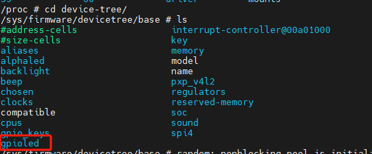
GPIO子系统
简介
GPIO名为”General Purpose Input/Output”，通用目的输入/输出，就是常用的引脚。
GPIO可能是芯片自带的，也可能通过I2C、SPI接口扩展：
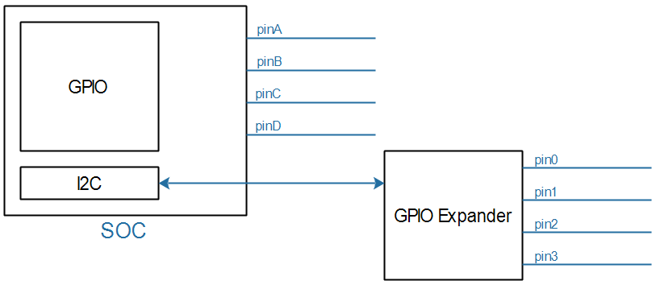
通用功能
- 可以设为输出：让它输出高低电平；
- 可以设为输入，读取引脚当前电平；
- 可以用来触发中断
通用属性
Active-HighandActive-Low以LED为例，需要设置GPIO电平。但是有些电路可能是高电平点亮LED，有些是低电平点亮LED。
可以使用如下代码：
1
2gpiod_set_value(gpio, 1); // 输出高电平点亮LED
gpiod_set_value(gpio, 0); // 输出低电平点亮LED对应同一个目标：点亮LED，对于不同的LED，就需要不同的代码，原因在于上面的代码中1、0表示的是”物理值”。
如果能使用”逻辑值”，同样的逻辑值在不同的配置下输出对应的物理值，就可以保持代码一致，比如：
1
2
3gpiod_set_value(gpio, 1); // 输出逻辑1
// 在Active-High的情况下它会输出高电平
// 在Active-Low的情况下它会输出低电平
dtsi文件，设备树中的gpio控制节点：“GPIO组”就是一个GPIO Controller
1
2
3
4
5
6
7
8
9
10gpio1: gpio@0209c000 {
compatible = "fsl,imx6ul-gpio", "fsl,imx35-gpio";
reg = <0x0209c000 0x4000>;
interrupts = <GIC_SPI 66 IRQ_TYPE_LEVEL_HIGH>,
<GIC_SPI 67 IRQ_TYPE_LEVEL_HIGH>;
gpio-controller;
interrupt-controller;
};针对gpio我们只关注两个属性：
1
2gpio-controller;
- “gpio-controller”表示这个节点是一个GPIO Controller，它下面有很多引脚。
- “#gpio-cells = <2>”表示这个控制器下每一个引脚要用2个32位的数(cell)来描述。比如可以用其中一个cell来表示那是哪一个引脚，用另一个cell来表示它是高电平有效还是低电平有效，甚至还可以用更多的cell来示其他特性。
当我们在设备树中使用的时候的格式为：
1
(diyname)-gpios = <&gpiox x xxxxx>;
例如我们使用
GPIO1_IO03的时候1
2
3
4
5// 定义LED使用的GPIO引脚：
// - &gpio1：引用GPIO控制器1
// - 3：使用该控制器的第3号引脚
// - GPIO_ACTIVE_LOW：低电平有效（高电平熄灭，低电平点亮）
led-gpio = <&gpio1 3 GPIO_ACTIVE_LOW>;
接口函数
gpio子系统有两套接口函数，新版的是使用struct gpio_desc结构体来表示一个引脚，驱动中需要包含头文件
1 |
GPIO获取函数
| 函数原型 | 参数 | 作用 | 使用场景 |
|---|---|---|---|
struct gpio_desc *gpiod_get(struct device *dev, const char *con_id, enum gpiod_flags flags) |
dev: 设备指针 con_id: GPIO标识符 flags: 配置标志 |
获取单个GPIO描述符 | 基础GPIO控制 |
struct gpio_desc *gpiod_get_index(struct device *dev, const char *con_id, unsigned int idx, enum gpiod_flags flags) |
idx: GPIO索引号 |
获取指定索引的GPIO | 设备树中多个同名GPIO |
struct gpio_descs *gpiod_get_array(struct device *dev, const char *con_id, enum gpiod_flags flags) |
参数同gpiod_get | 获取GPIO数组 | LED矩阵/按键阵列 |
struct gpio_desc *devm_gpiod_get(struct device *dev, const char *con_id, enum gpiod_flags flags) |
参数同gpiod_get | 自动管理资源的GPIO获取 | 设备驱动中推荐使用 |
devm_gpiod_get_index(struct device *dev,const char *con_id,unsigned int idx,enum gpiod_flags flags) |
- | 自动管理的索引GPIO | 多GPIO设备 |
devm_gpiod_get_array(struct device *dev, const char *con_id, enum gpiod_flags flags) |
- | 自动管理的GPIO数组 | 资源敏感的复杂设备 |
参数的意义：
dev- 类型：
struct device * - 含义：关联的设备指针，通常由平台驱动或设备树提供。
- 作用：用于查找设备树中与该设备关联的 GPIO 资源。
- 示例：
&pdev->dev（在平台驱动probe函数中）。
- 类型：
con_id- 类型：
const char * - 含义：GPIO 的连接标识符（名称），对应设备树中
gpios属性的名称。 - 作用：匹配设备树中
gpios属性的name字段。 - 示例：
- 设备树中定义：
gpios = <&gpio1 3 GPIO_ACTIVE_HIGH>; con_id应为"led"（若设备树中使用led-gpios或gpios）。
- 设备树中定义：
- 类型：
flags类型：
enum gpiod_flags含义：GPIO 的初始化标志，用于配置方向、上下拉、驱动能力等。
可选值：
方向标志
GPIOD_IN：配置为输入。GPIOD_OUT_LOW：配置为输出，默认低电平。GPIOD_OUT_HIGH：配置为输出，默认高电平。
其他标志
GPIOD_ACTIVE_LOW：反转 GPIO 极性（低电平有效）。GPIOD_OPEN_DRAIN：开漏输出模式。GPIOD_PULL_UP/GPIOD_PULL_DOWN：启用上拉/下拉电阻（部分平台支持）。
返回值：- 成功 ：返回指向
struct gpio_desc的指针（GPIO 描述符）。 - 失败 ：返回错误指针（需用
IS_ERR()检查）。
- 成功 ：返回指向
GPIO方向设置
| 函数原型 | 参数 | 作用 | 返回 |
|---|---|---|---|
int gpiod_direction_input(struct gpio_desc *desc) |
desc: GPIO描述符 |
设为输入模式 | 0成功，负错误码 |
int gpiod_direction_output(struct gpio_desc *desc, int value) |
value: 初始输出值 0：低电平（对应物理上的 GND 电压）。 1：高电平（对应物理上的 VDD 电压，如 3.3V）。 |
设为输出模式 | 同上 |
GPIO值读写
| 函数原型 | 参数 | 作用 | 注意 |
|---|---|---|---|
int gpiod_get_value(const struct gpio_desc *desc) |
- | 读取GPIO值 | 返回0/1或负错误 |
void gpiod_set_value(struct gpio_desc *desc, int value) |
value: 输出值 0：低电平（对应物理上的 GND 电压）。 1：高电平（对应物理上的 VDD 电压，如 3.3V）。 |
设置GPIO输出 | 需先设为输出 |
GPIO释放函数
| 函数原型 | 参数 | 作用 | 适用对象 |
|---|---|---|---|
void gpiod_put(struct gpio_desc *desc) |
desc: GPIO描述符 |
释放单个GPIO | gpiod_get获取的 |
void gpio_free(unsigned gpio) |
gpio: 全局编号 |
旧版释放方式 | 不推荐使用 |
void gpiod_put_array(struct gpio_descs *descs) |
descs: GPIO数组 |
释放整个数组 | gpiod_get_array |
void devm_gpiod_put(struct device *dev, struct gpio_desc *desc) |
dev: 关联设备 |
自动管理释放 | devm_gpiod_get |
void devm_gpiod_put_array(struct device *dev, struct gpio_descs *descs) |
- | 自动释放数组 | devm_gpiod_get_array |
驱动编写
我们编写驱动程序leddrv.c
1 |
|
代码分析
驱动流程图为：
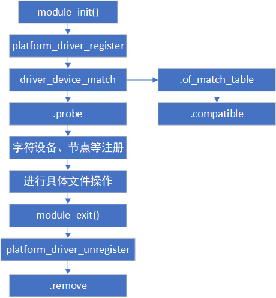应用程序
1 |
|
Qt编写
main.cpp
1 |
|
mainwindow.cpp
1 |
|
mainwindow.h
1 |
|
Qt 信号与槽
信号与槽（ Signal & Slot ）是 Qt 编程的基础，也是 Qt 的一大创新。
信号（Signal）
- 就是在特定情况下被发射的事件，例如 PushButton 最常见的信号就是鼠标单击时发射的 clicked() 信号，一个 ComboBox
槽（Slot ）
就是对信号响应的函数。槽就是一个函数，与一般的 C++ 函数是一样的，可以定义在类的任何部分（ public 、 private 或 protected ），可以具有任何参数，也可以被直接调用。
槽函数与一般的函数不同的是：槽函数可以与一个信号关联，当信号被发射时，关联的槽函数
被自动执行。槽可以是任何成员函数、普通全局函数、静态函数
关联：
信号与槽关联是用
QObject::connect()函数实现的，其基本格式有两种：方式一：
1
QObject::connect(sender, SIGNAL(signal()), receiver, SLOT(slot()));
connect()是 QObject 类的一个静态函数，而 QObject 是所有 Qt 类的基类，在实际调用时可以忽略前面的限定符，所以可以直接写为：
1
2
3
4
5
6
7
8connect(sender, SIGNAL(signal()), receiver, SLOT(slot()));
/*
- sender是**发射信号的对象的名称**
- signal() 是**信号名称**。信号可以看做是特殊的函数，需要带括号，有参数时还需要指明参数。
- receiver 是**接收信号的对象名称**
- slot() 是**槽函数的名称**，需要带括号，有参数时还需要指明参数。
- SIGNAL和SLOT是 Qt 的宏，用于指明信号和槽，并将它们的参数转换为相应的字符
*/方式二(==推荐==)：
1
2
3
4
5
6
7connect(sender,&signal,receiver,&slot)
/*
- sender是**发射信号的对象的名称**
- &signal是**信号名称**。信号可以看做是特殊的函数，需要带括号，有参数时还需要指明参数。
- receiver 是**接收信号的对象名称**
- &slot是**槽函数的名称**，需要带括号，有参数时还需要指明参数。
*/
流程：
当一个信号被发射时，与其关联的槽函数通常被立即执行，就像正常调用一个函数一样。只有当信号关联的所有槽函数执行完毕后，才会执行发射信号处后面的代码。
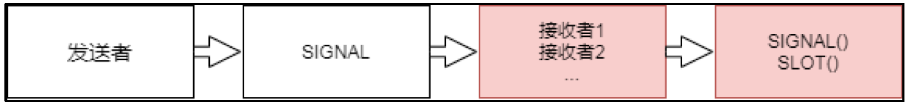特点：
==在使用信号与槽的类中，必须在类的定义中加入宏Q_OBJECT （特别重要） 。==
一个信号可以连接多个槽，例如：
1
2connect(pushButton,SIGNAL(clickedO),this,SLOT(hide();
connect(pushButton,SIGNAL(clicked(),this,SLOT(close();这是当一个对象pushButton 的 被单击 时，所在窗体有两个槽进行响应，一 个 hide() 用于隐藏主窗体，一个 close 用于关闭主窗体
当信号和槽函数 带有参数时，在connect() 函数里，要写明参数的类型，但可以不写参数名称。
1
2connect(pushButton,SIGNAL(objectNameChanged(QString)),this,SIGNAL(window TitelChan
ged(QString)));多个信号可以连接同一个槽
1
2
3connect( pushButton ,SIGNAL(clicked()),this, close()
connect( pushButton_2 ,SIGNAL(clicked()),this, close()
connect( pushButton_3 ,SIGNAL(clicked()),this, close()当任何一个pushButton 被单击时，都会执行 close() 函 数，进而关闭或者退出程序。
一个信号可以连接另外一个信号（说明了 connect 万物皆可连，非常好用！） ，例如：
1
2connect(pushButton,SIGNAL(objectNameChanged(QString)),this,SIGNAL(window TitelChan
ged(QString)));这样，当一个信号发射时，也会发射另外一个信号，实现某些特殊的功能。
严格的情况下，信号与槽的参数个数和类型需要一致，至少信号的参数不能少于槽的参数。如果不匹配，会出现编译错误或运行错误。例如：
- 当你发送一个信号时，Qt 需要将这个信号携带的数据（参数）传递给连接的槽函数。
- 如果槽函数期望接收某些参数，而信号没有提供足够的参数，就会导致数据缺失或类型不匹配。
- 如果使用==&符号时==，编译器会强制检查信号和槽的参数是否一致，否则无法通过编译。因此必须要参数保持一致。
1
2
3
4
5
6
7
8
9
10
11
12
13
14
15
16
17
18
19
20
21
22
23
24
25
26
27
28
29
30
31
32
33
34
35
36
37
38
39//--------------------实例1--------------------------------
class MyClass : public QObject {
Q_OBJECT
public slots:
void receiveData(int value, QString text) {
qDebug() << "Received:" << value << text;
}
};
QPushButton button;
MyClass obj;
// 错误：clicked(bool) 只有一个 bool 参数，而槽需要 int + QString
connect(&button, &QPushButton::clicked, &obj, &MyClass::receiveData);
//--------------------实例2--------------------------------
class MyEmitter : public QObject {
Q_OBJECT
signals:
void dataSent(int value, QString text, double extra); // 3 个参数
};
class MyReceiver : public QObject {
Q_OBJECT
public slots:
void receiveData(int value, QString text) { // 2 个参数
qDebug() << "Received:" << value << text;
}
};
MyEmitter emitter;
MyReceiver receiver;
connect(&emitter, &MyEmitter::dataSent, &receiver, &MyReceiver::receiveData);
//合法：因为信号有 3 个参数，槽有 2 个参数，信号参数多于槽参数，多余参数被忽略。信号只需声明无需定义，所以我们只需要在 mianwindow.h 里声明信号即可。
1
2
3
4
5
6
7
8
9
10
11
12
13
14
15
16
17
/* 引入QPushButton */
class MainWindow : public QMainWindow
{
Q_OBJECT
public:
MainWindow(QWidget *parent = nullptr);
~MainWindow();
signals:
/* 声明一个信号，只需声明，无需定义 */
void pushButtonTextChanged();
};
QFile
QFile 类提供了读取和写入文件的接口。在嵌入式里如果需要读写文件，最简单的方法就是用Qfile。QFile 是一个读写文本、二进制文件和资源的I/O 设备。QFile 可以自己使用，也可以更方便地与QTextStream 或QDataStream 一起使用。
对一个文本文件的操作流程
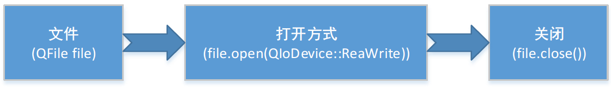
构造函数
使用 QFile 类操作文件之前，程序中需引入
头文件。创建 QFile 类的对象，常用的构造函数有： 1
2QFile::QFile() QFile::QFile(const QString &name)
QFile file("/dev/gpioled");参数 name 用来指定要操作的目标文件，包含文件的存储路径和文件名，存储路径可以使用绝对路径（如”D:/Demo/test.txt”）或者相对路径（比如”./Demo/test.txt”），路径中的分隔符要用 “/“ 表示。不支持使用其他分隔符(例如’')。所以在Windows、 Linux 或者Mac 里文件的路径都是用’/‘
通常情况下，我们会调用第二个构造函数，直接指明要操作的文件。对于第一个构造函数创建的 QFile 对象，需要再调用setFileName() 方法指明要操作的文件。
void QFile::setFileName(const QString &name) /*例子：*/ QFile file; file.setFileName("/sys/devices/platform/leds/leds/beep/brightness");if (!file.exists()) { return; }1
2
3
4
5
6
7
8
9
- 设置文件的名称。`name` 可以不包含路径、包含相对路径，也可以是绝对路径。
如果文件已经被打开，则不要调用此函数。
- **检查函数**
可以使用exists()检查文件是否存在，并使用remove()删除文件
1
2
3
4
5
6
7
8
- **打开函数**
```c++
bool QFile::open(OpenMode mode)
/*例子：*/
if(!file.open(QIODevice::ReadWrite))
qDebug()<<file.errorString();QFile::open()函数打开文件时需要传递 QIODevice::OpenModeFlag 枚举类型的参数，决定文件以什么方式打开
mode 参数用来指定文件的打开方式，下表罗列了此参数的可选值以及各自的含义
打开方式 含 义 QIODevice::ReadOnly 只能对文件进行读操作 QIODevice::WriteOnly 只能对文件进行写操作，如果目标文件不存在，会自行创建一个新文件。 QIODevice::ReadWrite 等价于 ReadOnly | WriteOnly，能对文件进行读和写操作。 QIODevice::Append 以追加模式打开文件，写入的数据会追加到文件的末尾（文件原有的内容保留）。 QIODevice::Truncate 以重写模式打开，写入的数据会将原有数据全部清除。注意，此打开方式不能单独使用，通常会和 ReadOnly 或 WriteOnly 搭配。 QIODevice::Text 读取文件时，会将行尾结束符（Unix 系统中是 “\n”，Windows 系统中是 “\r\n”）转换成‘\n’；将数据写入文件时，会将行尾结束符转换成本地格式，例如 Win32 平台上是‘\r\n’。 读函数
1
qint64 read(char *data, qint64 maxSize)
- 功能：从设备读取原始字节到缓冲区
- 返回值：
>0：成功读取的字节数0：无更多数据（非错误）-1：错误（如设备关闭或只写模式）
- 关键点：需手动管理缓冲区，但错误处理最可靠
1
2
3
4
5
6
7
8
9
10
11
12
13
14
15QFile file("example.txt");
if (!file.open(QIODevice::ReadOnly)) { // 以读模式打开文件
qDebug() << "无法打开文件读取：" << file.errorString();
return -1;
}
char buffer[100];
qint64 bytesRead = file.read(buffer, sizeof(buffer) - 1); // 保留最后一个字节给'\0'
if (bytesRead > 0) {
buffer[bytesRead] = '\0'; // 添加字符串结束符
qDebug() << "读取到：" << buffer;
} else {
qDebug() << "读取失败：" << file.errorString();
}
file.close();写函数
1
qint64 write(const char *data, qint64 len);
参数说明
data：指向要写入数据的缓冲区的指针。len：要写入的字节数（最大值为qint64类型）。
返回值
- 成功时返回实际写入的字节数（可能小于
len，例如磁盘空间不足）。 - 如果发生错误（如文件未打开或不可写），返回
-1。
1
2
3
4
5
6
7
8
9
10
11
12
13
14QFile file("example.txt");
if (!file.open(QIODevice::WriteOnly)) { // 以写模式打开文件
qDebug() << "无法打开文件写入：" << file.errorString();
return -1;
}
const char *data = "Hello World!";
qint64 written = file.write(data, strlen(data)); // 写入字符串
if (written != strlen(data)) {
qDebug() << "写入失败：" << written << "字节（应写入" << strlen(data) << "字节）";
} else {
qDebug() << "成功写入" << written << "字节";
}
file.close();
实验效果
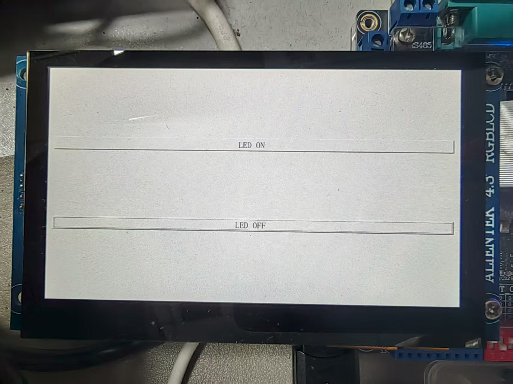